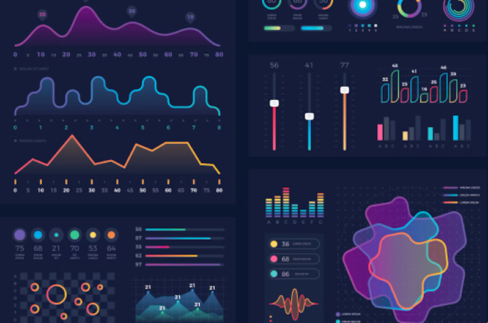

SN Corp Dashboard (Power BI)

Project Overview
This Power BI project visualizes business performance metrics for SN Corporation, covering Sales, Profit, Regional Performance, and Customer Segmentation. The dashboard enables top-level insights and deep drill-down analysis.
Dashboard File
View SN Corp Dashboard →Dataset
sn-corp-dataset.xlsxKey Insights
- Region A generates the highest revenue across all quarters.
- Profit margins vary sharply between product categories.
- Customer age group 25–40 contributes to majority of total sales.
- Seasonal patterns show strong sales in Q3.
- Underperforming regions identified for strategic improvements.
Why This Matters
Power BI dashboards like this help leadership teams monitor performance, identify growth opportunities, and make data-driven decisions quickly.